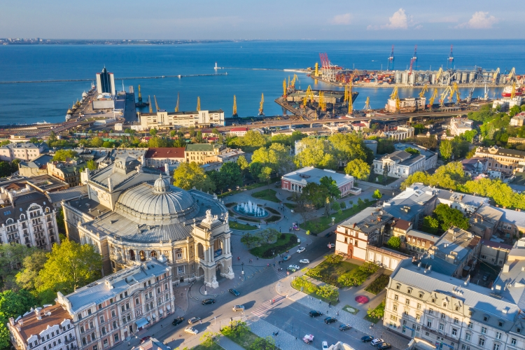

Одесса
Морской дух, уникальная архитектура.
Страна глубоких традиций, сильного характера и городов с уникальной атмосферой.
Украина — большая европейская страна с богатой историей...

Вышиванки, обряды, народные песни и танцы...
Украинский язык — мелодичный и выразительный.


Украинцы — трудолюбивые, гостеприимные и стойкие.
Борщ, вареники, деруны — сытная и вкусная кухня.
Морской дух, уникальная архитектура.

Столица с древними храмами.

Студенческий центр.
Кофейная столица.
Карпатская природа.